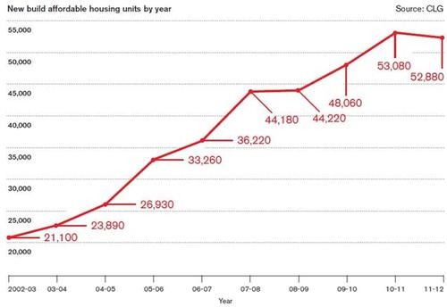

Forum is Free: Housing and Energy
March 12, 2015
On 11 May, Bristol Green Party hosted a forum to discuss housing and energy at The Station in central Bristol.
The meeting was chaired by Darren Hall, Green Party candidate for Bristol West and Director of Bristol Green Week and on the panel were:
- Oona Goldsworthy, Chief Executive of United Communities
- Mike Roberts, Director of HAB housing owned by Kevin McCloud
- Shankari Raj Edgar, Director of Nudge Group
- Keith Cowling, Chair of Bristol Community Land Trust and Director of Community Buildings Federation

Impending affordable housing crisis (source).
{kind=link}
Oona clarified that housing should be a third of your income. The definition of affordable housing lies somewhere along the lines of 80% of the market rent value. She suggested that going ahead and occupying empty houses may be the only option left as asking politely is not working. She explained that local authorities need to see housing development as something that they can gain from rather than something that they are throwing money into as the cumulative cost of renting a private property for a family to stay in temporarily outweighs the savings made by not building social housing.
Mike thinks that at present, even the best stuff from volume house builders is not good enough and that Britain has developed an attitude of NIMBY-ism when it comes to volume house building. He suggested that we need to start putting people at the heart of the construction business and as a result, his company is looking into new ways of funding build projects such as crowd-funding rather than corporate interests deciding design outcomes that are not suitable for anybody. He was particularly fond of shared ownership housing which can also help to build communities.
Mike wants solar PV to be an integral part of any new builds and that pension funds are an ideal funding source for this as the long term returns requirement of the funds would be satisfied by the long term economic benefits of solar PV alongside its environmental benefits and low energy bills to the occupants. Later, he explained that developers need assurance that risks need to be minimised for developers so that that can keep their margins low although I am slightly sceptical about exactly what he means by this.
In response to ‘One Structural Change’ that Darren should be fighting for, he was certain that the way we evaluate land value tax needs fundamental restructuring so that land owners cannot simply sit on a property preventing development on the site in this time of housing crisis simply so that they can reap benefits of rise in land value in the future due to additional infrastructure provision.
Keith has successfully led a community effort to build 12 houses in Bristol. He points out that Bristol has one of the biggest gaps between people’s wages and the cost of housing in the UK. In his opinion, localism and community taking the reins is not working at the moment and that authorities will the end without willing the means or dismantling the bureaucratic hurdles when it comes to community led housing development effort.
In response to a question from a member of the audience about ‘Why is affordable leasing possible in somewhere like Netherlands and not here?’, Keith gives example of Germany where housing is not seen as a commodity that is to be exploited to the extent that it is in the UK. He has noticed that people are far more likely to remain in a community if they are involved in the design process. He gives another example of housing coop in Leeds where they have come up with an innovative way of drawing up contract where the tenants who all have a stake in the coop pay rent that is pegged to their income and their rights get transferred when they leave the coop.
Shankari begins from the premise that society, economy and environment are all interconnected and whenever one is emphasised, others are subjugated. A good mix is one third affordable housing, one third rental and one third ownership however I would like to know where these statistics come from. The point does remain that we need to cater for the whole cross section of the society.
At the moment, volume house builders are building half the number of homes required whilst at the same time doubling their profit. To this, a man in the audience raised the point that Bristol currently needs to build 2000 houses a year for which we need 40 football pitches worth of land which we don’t have. Then someone asked if beautiful high density urban housing was even possible? Someone else then had praises for Rob Adams in pioneering social urban densification in Australia.
Schools are just as important in Shankari’s view as they are the key to an integrated society. Schools should not be segregated based on faith and that tools like meditation should be deployed early on as they have shown some evidence to raise self-awareness in children. The goal of schools should not be to produce workers for the economy but also human beings with concern for the society and the environment. There is also a role for permaculture to increase biodiversity.
A representative from Ecomotive, a social enterprise who are trying to increase the debate around housing raised the point that the city council is currently assessing how much housing we need at the moment and that the main people who are currently feeding into the assessment are volume developers. There is a need for community voices to be heard and the organisation is welcoming involvement.
There was concern that landlords increasing energy efficiency by 2018 may not have an adequate amount of impact.
Summary from Darren:
- Carriageworks development should be opposed in its current form and should instead be a community led project.
- There is a huge role for the public sector to create affordability, not just see houses as a unit. There was reference to the concept of ‘blockade’ in Naomi Klein’s recent book ‘This Changes Everything’.
- There is a need for long term community engagement in the design process.
- We need to press forward with devolution agenda.